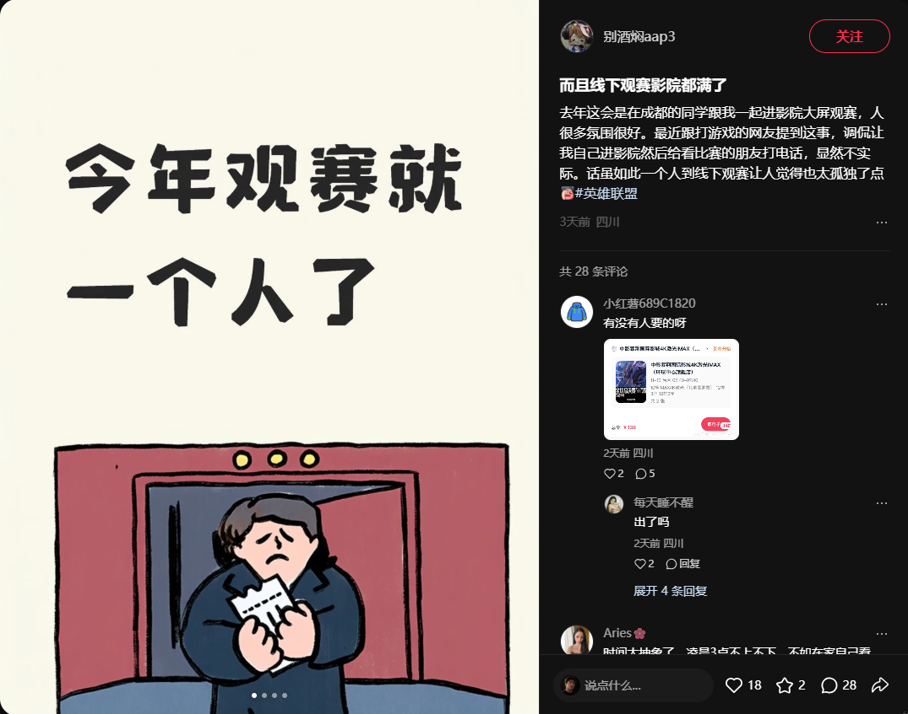
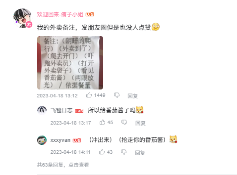
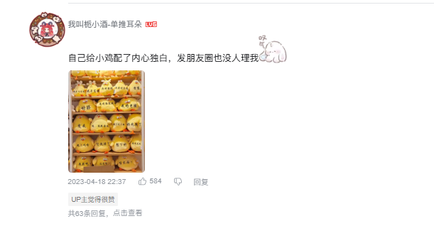
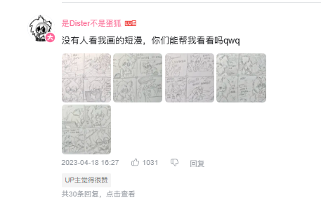
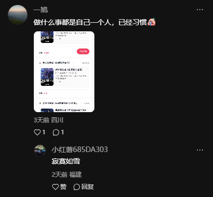
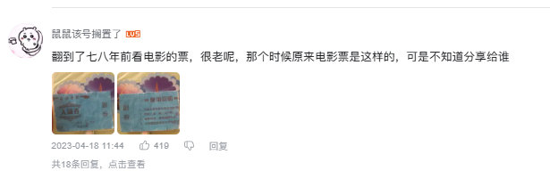
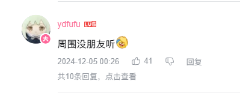
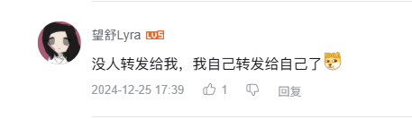

熟人 / 群聊
要找得到人，还要对方正好懂这个梗；分享本身有社交成本，不是每个瞬间都值得发出去。
你有没有遇到过这种时刻？看喜欢的番剧、电影、视频，想分享却找不到人；
那一刻你渴望有人能陪着你，懂你的梗，欣赏你的品味。








2025 年，全球 AI 陪伴市场已到 368 亿美元；中国 AI 情感陪伴市场，2027 年将到 约 240 亿元。
| 产品 | 提供的产品或服务 | 规模 / 利润 | 现状 | 市场占比 |
|---|---|---|---|---|
| Character.AI | UGC 角色聊天：用户自建角色，以文字为主；订阅 4.99 / 9.99 美元 + 广告 | 1,200 万 MAU；2026-08 收入 530 万美元（订阅 280 + 广告 250）＝ 每 MAU $0.44；1–8 月算力 5,610 万美元，月均每 MAU $0.58；8 月总成本 1,330 万、净亏 820 万 | 2026-10 申请 Chapter 11 破产保护，重组中 | MAU 全球第二（峰值 2,800 万 → 约 1,200 万） |
| Talkie | MiniMax 出海版：角色聊天 + 卡牌收集；订阅 + 内购 + 广告 | 3,107 万 MAU；与星野 2025 前九月合计 1,875 万美元（占 MiniMax 收入 35.1%）；AI 原生业务毛利率 4.7% | 2024-12 起美区 App Store 下架未恢复，集团重心转海螺 AI | MAU 全球第一（3,107 万，超 Character.AI） |
| Replika | 个人 AI 伴侣：文字 / 语音 / 视频；订阅 19.99–29.99 美元/月 | 累计 4,000 万用户；ARR 1,400 万美元（2024-06）；免费转付费约 25% | 93 人、无外部融资，自负盈亏（未审计）；增长乏力 | 未披露 MAU；欧美订阅基本盘 |
| Chai | 角色聊天，区域差异化定价：欧美日免费 + 广告，低 ARPU 市场设付费门槛 | DAU 100 万+；年化收入 1.2 亿美元（订阅 + 内购 60%、广告 40%） | 自称剔除营销费用后盈利（未审计）——目前最像跑通的一家 | 收入第一（年化 1.2 亿美元） |
| 产品 | 提供的产品或服务 | 规模 / 利润 | 现状 | 市场占比 |
|---|---|---|---|---|
| 猫箱 · 字节 | AI 角色扮演 + 语音通话 + 剧情 + UGC；会员 25 元/月 + 猫粮内购 | 445–472 万 MAU；iOS 累计内购超 2,200 万美元；单月活变现约星野 / 筑梦岛 4 倍 | 2026Q1 中国 iOS AI 应用收入第一；利润未单独披露 | 已披露 MAU 第一（约 57%） |
| 星野 · MiniMax | AI 角色扮演社区：捏崽 + 语音；广告 + 订阅 + 内购 | 338 万 MAU（2024-11 峰值 512 万）；广告 59.7% / 订阅 35.2% / 内购 5.1%；AI 原生业务毛利率 4.7% | 2025 年 1–5 月 iOS 下载跌 81%，集团重心转企业端 | 已披露 MAU 第二（约 43%） |
| 筑梦岛 · 阅文 | 女性向「梦中人」，多模态 + 阅文 IP；内购 / 订阅 | 官方未披露 MAU；单用户变现约为猫箱 1/4 | 2025-01 独立运营，融资超 1,000 万美元 | 未披露 |
要找得到人，还要对方正好懂这个梗；分享本身有社交成本，不是每个瞬间都值得发出去。
公开、异步、面向所有人；没有只属于你的记忆，也无法接住私下的那点情绪。
主播决定看什么、什么时候开播，注意力是一对多；它替代不了你此刻自己选的那条视频。
不在播放器里，不知道你正看哪一帧；开放式聊天把成本和打扰同时放大。
下面不是录屏，是可以动鼠标的页面。画面里那台小电视就是它：不暂停、不弹窗，只用眼神、神态和一句短念头回应你正在看的东西。
把鼠标移到画面上，它的眼睛会跟着走——先确认你们看的是同一处，再谈说话。
反应只占画面一角，用神态和短句；没有遮罩、没有弹窗，不想理它就不理。
默认不调用生成模型，只有你主动问才进入对话——这是成本口径，也是打扰口径。
抽取画面语义、故事线与关键节点，形成可复用的「剧本」资产。
同一内容只理解一次；播放端按时间点取节点，不为每次观看重复烧算力。
时间 × 内容 × 用户行为组合成在场强度，优先用眼神、动作与停顿表达。
只有显式触发才进入语音或文本生成；默认在场不调用大模型。
画布只放可观察的输入、机制和交易路径：左侧是供给条件，中间是产品机制，右侧是用户与触点，底部列成本与收入；已知资产和待证结果分开呈现。
已有资产内容、播放器、小电视 IP、会员支付管线。
方案机制一次解析、多次轻反应、按需重对话。
仍待证明3% 广告 uplift、2% 会员续订 uplift 与 0.5% 购买率是否成立，AI 成本能否压到 ¥0.09。
B 站 2025 年 IP 衍生品及其他收入 19.66 亿元，会员购与联名交易链路已经存在；这只说明「为形象和周边付费」的路径存在，不证明本产品能卖出多少。下面按可售卖对象拆成三层，价格带均为待测试假设。
外壳、天线、眼睛光效、季节主题、番剧与 UP 主联名。换装不换人格，换完仍是你那只。
建议测试价 ¥18–45 / 套 单卖 · 大会员折扣墙纸、地毯、家具、摆件、灯光。单件可换、套装可组，形成持续上新，而不是一次性大礼包。
¥3–18 / 件 · 套装 ¥28–68 组件化 SKU · 可持续扩展年度回顾册、徽章、亚克力、联名周边。把一起看过的内容，变成可以保存和展示的东西。
¥29–129 / 次 会员购 · 实物衍生大会员怎么接：每季 1 套基础外观随会员解锁；联名款、设计师款单卖，会员享折扣。会员权益增强续订，单卖承接更深的表达需求，核心表情与完整陪伴永久免费。
先摆线索，再谈策略。每格列观察到的数据、竞品行为或设计事实；S / W 对应内部条件，O / T 对应外部环境，末尾只收束由线索导出的验证顺序。
竞品仍停留在工具或插件 → 用播放器内小电视做低打扰陪看，先覆盖番剧、VLOG 等日常独看场景。
观察：主动互动率、观看完成率、场景偏好先做 5–8 人可用性测试，再分区灰度；先验证神态密度与唤起，再开放复杂对话。
观察：接住率、关闭率、打扰投诉率多模型供应商保留替换能力；视频「剧本」与用户授权记忆持续沉淀，避免把差异押在单一模型上。
观察：D7 / D30 留存、记忆纠错与删除、供应商可替换性采用增量口径：单 MAU 增量收入必须覆盖 AI 成本与运营；连续两周贡献为负，先降级重对话，再退回纯神态或停止扩量。
门槛：增量收入 ≥ AI 成本 + 运营成本；广告与会员增量需对照组归因